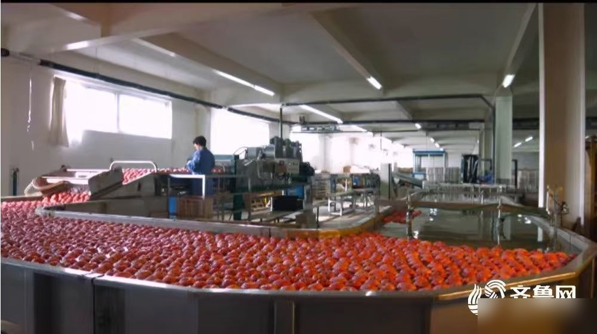

【客户背景】山东鲁一食品股份有限公司是山东本地食品制造企业之一，长期围绕山东丰富的农产品资源与产业集群优势，在食品制造领域持续深耕。公司业务覆盖产品研发、生产加工与多渠道销售，是山东食品工业生态中的活跃参与者。
【行业坐标】山东是中国食品工业大省，粮油、果蔬、畜禽、水产加工产业链完整，企业身处其中既享有集群带来的供应链与人才优势，也面对来自全国品牌、跨界新锐的渠道与营销竞争。如何在保持本地化运营优势的同时，把管理体系升级为可承接全国化布局的能力，是鲁一食品当下最关注的命题。
【服务方式】华认联国际项目组以"中层管理梯队建设"为切入点，通过对生产、研发、销售、供应链 4 个条线 30 余名中层骨干的能力盘点，输出《中层管理者胜任力卡片》《目标分解五步法》《跨部门协同七步法》等系列工具，并以"集中集训 + 部门带教 + 标杆复制"的方式把工具落到日常管理动作里。
【价值沉淀】项目交付后，公司把中层轮训作为长期机制保留下来，每季度滚动一次"复盘 + 主题集训"，把管理体系从一次性项目沉淀为可复用的组织能力。后续双方在"研发体系与营销体系协同升级"方向上保持沟通，希望把管理能力与产品创新节奏进一步打通。
← 返回客户案例